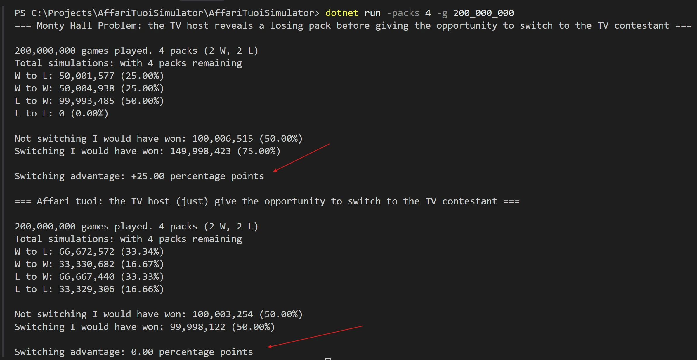

Affari tuoi pack switch problem
Affari tuoi pack switch vs Monty Hall problem
Some days ago, scrolling TikTok, I came across a video that asked: "What should a contestant of Affari tuoi do when the host offers a pack switch?"
The original video is here. I stopped it and tried to answer by myself.
Affari tuoi (quick recap)
Affari tuoi is an Italian TV show similar to “Deal or No Deal”. A contestant starts with a pack from a pool of 20. During the game, the remaining packs get opened one by one, and in the end the contestant wins the prize inside their own pack.
During the game, “Il Dottore” (who knows all the pack contents) can propose options like:
- a money offer to stop the game
- a switch: trade your pack with another remaining one
In this post I only consider the second case: the switch option.
My first answer (and why it was wrong)
When I saw the question, I immediately thought about the Monty Hall problem. There is also a famous movie scene from “21” that explains it in a very simple way (clip here, movie here).
So I went for it: “Switching must be better.”
Well… obviously I was wrong.
Why this is not the Monty Hall problem
In the Monty Hall problem, the host opens a door knowing it contains a losing prize. This action gives information to the contestant, and that's exactly why switching changes the probability.
In the Affari tuoi “switch” scenario (the one discussed in the TikTok), the switch offer does not come with new information about what is inside the remaining packs. If the switch is basically “trade your pack with another remaining one” (without a reveal step like Monty Hall), then your pack is still just a random element from the remaining pool, a subtle difference...
Yeah, which changed everything.
Another way to say it: if the pack assignment and the offered switch are random, then switching is like re-drawing from the same remaining set. You don't gain extra signal, you just reshuffle your position inside the same uncertainty, even if you have the perception of having more information about the remaining packs (eg. number of remaining winning packs).
What happened next
I was already happy to be wrong and to learn something new. But the story didn't end there.
I left a sarcastic comment under the video and ended up in a discussion with a user that didn't agree with the explanation. I think his doubts came from an improper use of ChatGPT (bad at this king of problems, at least at that time and especially the free version), plus some confusion about what exactly makes Monty Hall “special”.
So I tried to help: first with a mathematical explanation (following the same idea from the video), and then with a “last resort”: let's just simulate it and see.
The implementation (simulation)
I implemented two scenarios: the Monty Hall problem and the Affari tuoi switch. Both are based on a Fisher-Yates bag that represents the pool of packs (library here).
Each game starts by assigning a random pack to the contestant. Then we simulate a switch request and we collect statistics for “switch accepted” vs “switch refused”.
The key difference is that in the Monty Hall scenario the host reveals a losing option with knowledge, so the switch cannot land on that revealed losing pack.
protected override int GetSwitchPack(int myPackBeforeSwitch)
{
int montyHallRevealedLosingPack;
do
{
// _montyHallKnowledgeBag contains the losing packs pool
montyHallRevealedLosingPack = _montyHallKnowledgeBag.GetNextRandom();
} while (montyHallRevealedLosingPack == myPackBeforeSwitch);
int myPackAfterSwitch;
do
{
myPackAfterSwitch = _bag.GetNextRandom();
} while (myPackAfterSwitch == montyHallRevealedLosingPack);
_montyHallKnowledgeBag.Reset();
return myPackAfterSwitch;
}The full code is here: monty-hall-vs-affari-tuoi-problem.
Conclusion

Empirically (variance excluded), in the Affari tuoi scenario the probability of winning is the same whether you switch or not.
In the Monty Hall problem, on the other hand, the probability of winning is higher if you switch (after the losing option is revealed by the host).
Happy ending: the user accepted the empirical results, and two more people learned something new—Affari tuoi pack switch (in this setup) is not the Monty Hall problem, and switching is not giving you an advantage.